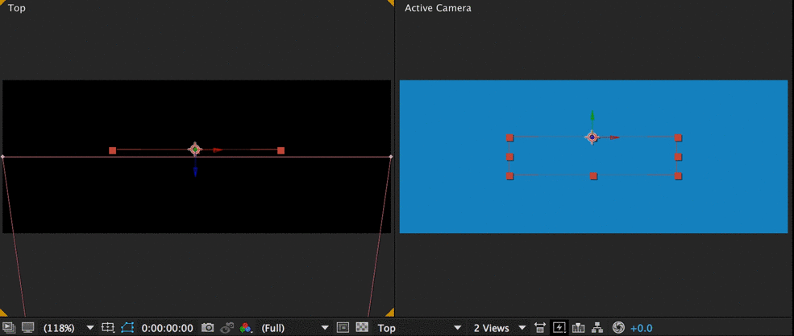
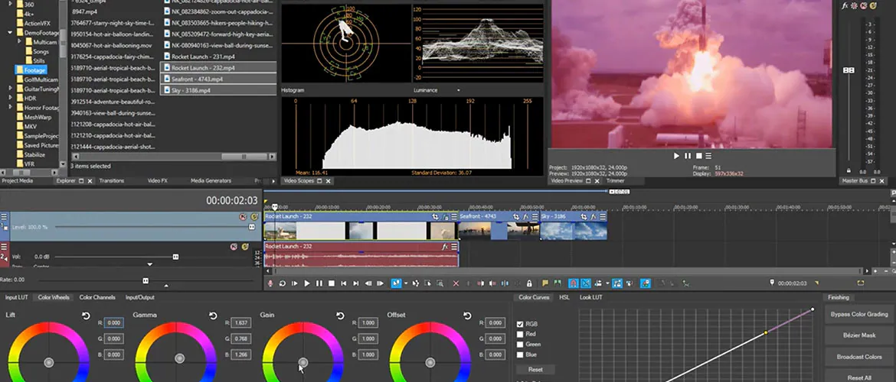

There are few programs in the world capable of producing stunning works of visual art like Adobe After Effects. However, if you’re new to Adobe After Effects, you might be a little confused about what AE can do. To clear up some of the confusion, we’ve put together this post explaining the creative and technical possibilities of Adobe After Effects. If you have any questions about what you can do in After Effects, I’m more than happy to answer them in the comments below.here are few programs in the world capable of producing stunning works of visual art like Adobe After Effects. However, if you’re new to Adobe After Effects, you might be a little confused about what AE can do. To clear up some of the confusion, we’ve put together this post explaining the creative and technical possibilities of Adobe After Effects. If you have any questions about what you can do in After Effects,
There are few programs in the world capable of producing stunning works of visual art like Adobe After Effects. However, if you’re new to Adobe After Effects, you might be a little confused about what AE can do. To clear up some of the confusion, we’ve put together this post explaining the creative and technical possibilities of Adobe After Effects. If you have any questions about what you can do in After Effects, I’m more than happy to answer them in the comments below.What Do Most People Use After Effects For? The Effects Library The thing that really sets After Effects apart from all the other video applications is its vast effects library. There are literally hundreds of built-in effects that can be combined to create an unlimited number of creative possibilities. This might sound a little too good to be true, but in After Effects — if you can dream it, you can do it. Let’s take a look at a few of the effects categories included in Adobe After Effects. Simulation Effects There are 18 simulation effects built into Adobe After Effects. These simulation effects can be used to create anything from rain to hair. All of these effects are completely customizable. When you pair them with other effects, you can take their functionality much further. Below is an example of the CC Snowfall effect built into After Effects. To create the effect, I literally just dragged and dropped. No customization was necessary.
There are few programs in the world capable of producing stunning works of visual art like Adobe After Effects. However, if you’re new to Adobe After Effects, you might be a little confused about what AE can do. To clear up some of the confusion, we’ve put together this post explaining the creative and technical possibilities of Adobe After Effects. If you have any questions about what you can do in After Effects, I’m more than happy to answer them in the comments below.here are few programs in the world capable of producing stunning works of visual art like Adobe After Effects. However, if you’re new to Adobe After Effects, you might be a little confused about what AE can do. To clear up some of the confusion, we’ve put together this post explaining the creative and technical possibilities of Adobe After Effects. If you have any questions about what you can do in After Effects,